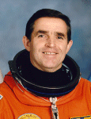

Lyndon B. Johnson Space Center
Houston, Texas 77058
|
National Aeronautics and Space Administration Lyndon B. Johnson Space Center Houston, Texas 77058 |
 |
Biographical Data |
||
Leonid K. Kadenyuk
NSAU Astronaut
PERSONAL DATA: Born January 28, 1951, in the Chernivtsi region of Ukraine. Married to Vera Kadenyuk (nee Kosolapinkova). They have two sons. He enjoys family time, running, athletics.
EDUCATION: Graduated from secondary school in 1967, from the Chernihiv Higher Aviation School in Chernihiv, Ukraine, in 1971, and from GNIKI VVS USSR (State Scientific Research Institute of the Russian Air Forces Center for test pilot training) in 1977, and the Yuri Gagarin Cosmonaut Training Center in 1978. He earned a master of science in mechanical engineering from the Moscow Aviation Institute, Department of Aircraft Construction, Moscow, Russia, in 1989.
EXPERIENCE: Colonel Kadenyuk has been a member of the USSR Cosmonaut Team since 1976. He underwent complete engineering and flight training for Soyuz, Soyuz-TM, orbital station Salyut, orbital complex Mir, including special training as a commander of Buran reentry space vehicle. He has flown 54 different types and modifications of aircraft, has logged more than 2400 hours flying time, and holds the qualifications of Test Pilot, 1st Class, and Military Pilot, 2nd Class, and Test Pilot. As a pilot-instructor he was responsible for the graduation of fifteen students.
In 1971, he graduated from Chernihiv Higher Aviation School, Chernihiv, Ukraine, as a pilot-engineer. In 1976 he was selected to join the cosmonaut team at Yuri Gagarin Cosmonaut Training Center, Star City, Moscow, Russia. He attended test pilot training at GNIKI VVS USSR (State Scientific Research Institute of the Russian Air Force). He graduated in 1977, proficient in test aircraft piloting, aerodynamics, aircraft construction and exploitation. The following year, was spent at the Yuri Gagarin Cosmonaut Training Center where he successfully completed general space training. The course included biology, ecology, medicine, meteorology, space geology and geobotany. As a Test Cosmonaut he is trained to perform scientific research, tests and experiments in any of the above-named disciplines, both in-flight and on the ground.
From 1978-1983 he served as a Test Cosmonaut/Pilot in the Multiple Usage Space System Group at the Yuri Gagarin Cosmonaut Training Center. While there he underwent advanced training in the conduct of in-flight scientific experiments. He is trained in survival techniques, EVA activities, and work in simulated weightlessness. He was involved in experimental investigations and testing of space technology for the Buran reentry vehicle system. He has performed numerous sky dives including some live, in-flight, reporting.
From 1984-1988 he was a Test Pilot at GLIC VVS Russia (former GNIKI VVS USSR) Russian State Test Flight Center, Russian Air Force. During that time, he performed test flights for three State airplane tests on the SU-27, SU-27UB and MIG-25, was promoted to 1st Class Pilot, flight tested the SU-27, MIG-23, MIG-25, MIG-27 and MIG-31 military spacecraft, and performed tests in lowering and landing the "Buran" space ship on MIG-31 and MIG-25.
In 1985, he served as Chairman of the State Committee on SU-27M cockpit design.
In 1990, following the Ukrainian-USSR State Agreement on a Collaborative Space Program, he was appointed to command the Ukrainian space crew. In the following two years, he trained to command Soyuz-TM-S during its docking with unmanned Buran and Mir station (mission was canceled due to financial difficulties), completed the full course of space training for a commander of the SOYUZ-TM, and also took the full course of manual docking of space ships, using special training equipment. In subsequent years, he underwent engineering and flight training courses as commander of the Buran Space System. Using MIG-31 and MIG-25 he mastered and improved the trajectory for lowering and landing the Buran spacecraft.
In 1996, he transferred to the Institute of Botany, National Academy of Sciences of Ukraine, Kyiv, as a scientific investigator developing the collaborative Ukrainian-American experiment in space biology.
NASA EXPERIENCE: Colonel Kadenyuk is one of the first NSAU Astronaut group selected in 1996 by the National Space Agency of Ukraine. In November 1996, NSAU and NASA assigned him to be one of two payload specialists for the Collaborative Ukrainian Experiment (CUE) which was flown on STS-87. He participated in payload specialist training at the Johnson Space Center and was the prime payload specialist aboard Space Shuttle Columbia on STS-87, (November 19 to December 5, 1997). STS-87 was the fourth United States Microgravity Payload flight and focused on experiments designed to study how the weightless environment of space affects various physical processes, and on observations of the Sun's outer atmospheric layers. Two members of the crew performed an EVA (spacewalk) which featured the manual capture of a Spartan satellite, in addition to testing EVA tools and procedures for future Space Station assembly. In completing his first mission Kadenyuk orbited the Earth 252 times, traveled 6.5 million miles and logged a total of 15 days, 16 hours and 34 minutes in space.
JANUARY 1998